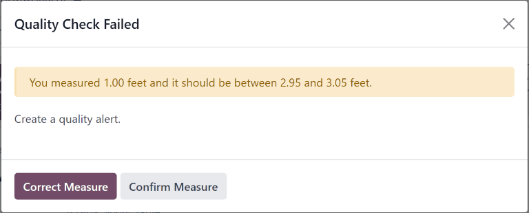

Control de calidad de medición¶
En la aplicación Calidad de Odoo, un control de calidad de Medidas es uno de los tipos de control de calidad que puede seleccionar al crear un nuevo control de calidad o un nuevo punto de control de calidad. Los controles de calidad de Medidas le pedirán al usuario que mida una parte del producto para registrarlo dentro de Odoo. Para pasar el control de calidad, el valor medido debe estar dentro de una tolerancia específica de un valor normativo.
Crear un control de calidad de Medida¶
Hay dos formas en las que puede crear un punto de control de calidad de tipo Medida. Puede crear un control de calidad de manera manual o puede configurar un punto de control de calidad para crear controles en automático en un intervalo predeterminado.
Esta documentación solo incluye información sobre las opciones de configuración pertenecientes a los controles y puntos de control de calidad de tipo Medida. Si desea obtener un resumen completo de todas las opciones de configuración disponibles al crear un control de calidad o puntos de control de calidad, consulte la documentación sobre controles de calidad y puntos de control de calidad.
Control de calidad¶
Para crear un solo control de calidad tipo Medida, vaya a y haga clic en Nuevo. Llene el nuevo formulario de control de calidad como se indica aquí:
En el campo desplegable Tipo seleccione Medida.
En el campo desplegable Equipo seleccione el equipo de control de calidad responsable por este control.
En el campo de texto Instrucciones de la pestaña Notas escriba las instrucciones para tomar la foto.
Punto de control de calidad¶
Para crear un punto de control de calidad que genere controles de calidad de tipo Medida de forma automática, vaya a y haga clic en Nuevo. Complete el formulario del nuevo punto de control de calidad de la siguiente forma:
En el campo desplegable Tipo seleccione el tipo de control de calidad Medida. Esto hará que aparezcan dos campos nuevos: Norma y Tolerancia.
Use el primer campo de texto en Norma para registrar la medida ideal a la que un producto se debería apegar. Use el segundo campo de texto para especificar la unidad de medida que se debe usar.
El campo Tolerancia tiene dos subcampos: de y hasta. Use el campo de para especificar la medida mínima aceptable y el campo hasta para especificar la medida máxima aceptable.
En el campo desplegable Equipo seleccione al equipo de calidad responsable de gestionar los controles creados por el punto de control de calidad.
En el campo de texto Instrucciones explique cómo se deben tomar las medidas.
Procesar un control de calidad tipo Medida¶
Hay muchas maneras en las que podemos procesar los controles de calidad tipo Medidas. Si asignamos un control de calidad a una orden de fabricación, inventario o trabajo específico, el control de calidad se puede procesar directamente en la orden. También es posible procesar un control de calidad desde la página del control de calidad.
Desde la página de controles¶
Para procesar un control de calidad tipo Medida vaya a y seleccione un control de calidad. Siga las Instrucciones ver cómo realizar la medida.
Después de tomar la medida, registre el valor en el campo Medida en el formulario de control de calidad. Para pasar o fallar un control de forma manual, haga clic en guilabel:Aprobado o Falló en la parte superior del control.
Alternativamente, si el control de calidad está asignado a un punto de control de calidad para el que se han especificado valores de norma y tolerancia, haga clic en Medir en la esquina superior izquierda del control. Al hacerlo, la comprobación se marcará automáticamente como Aprobado si el valor registrado está dentro de la tolerancia especificada, o como Fallida si el valor está fuera de ella.
En una orden¶
Para procesar un control de calidad tipo Medidas seleccione una orden de fabricación o de inventario (recibo, entrega, devolución, etc.) que necesita pasar por el control. Para seleccionar las órdenes de fabricación vaya a y haga clic en una orden. Para seleccionar una orden de inventario vaya a , haga clic en el botón # Por procesar que se encuentra en la tarjeta de operación y seleccione un orden.
En la orden de inventario o de fabricación seleccionada aparecerá un botón morado de Controles de calidad en la parte superior de la página. Haga clic en el botón para abrir la ventana emergente de Control de calidad, lo que mostrará todos los controles de calidad que se requieren para esa orden.
Para procesar una revisión de calidad tipo Medida, primero debe medir el producto como se le pida, después ingrese el valor en el campo Medida en la ventana emergente y haga clic en Validar para registrar el valor registrado.

Si el valor que proporcionó se encuentra dentro del rango especificado en la sección Tolerancia del punto de control de calidad, el control de calidad se aprobará y la ventana emergente se cerrará. Puede procesar el resto de las órdenes de fabricación o inventario como de costumbre.
Sin embargo, si el valor que proporcionó está fuera del rango especificado, aparecerá una nueva ventana emergente con el nombre Falló el control de calidad. En el cuerpo de la ventana emergente aparecerá el mensaje Midió # unidades y debería medir entre # unidades y # unidades. además de las instrucciones que proporcionó en la pestaña Mensaje en caso de error del punto de control de calidad. En la parte inferior de la ventana emergente aparecerán dos botones: Corregir medida y Confirmar medida.
Si la medida no se ingresó correctamente y tiene que cambiarla, seleccione Corregir medida. Así se volverá a abrir la ventana emergente de Control de calidad. Ingrese la medida correcta en el campo Medida y después haga clic en Validar para completar la revisión.
Si la medida se ingresó de forma correcta, haga clic en Confirmar medida y el control de calidad fallará. Siga todas las instrucciones enlistadas en la ventana emergente Falló el control de calidad.
Si se debe de crear una alerta de control de calidad, haga clic en el botón Alerta de calidad que aparece en la parte superior de la orden de fabricación o inventario después de que se falle el control de calidad. Al hacer clic en esta botón, se abrirá un formulario nuevo de alerta de calidad en una nueva página.
Para ver una guía completa sobre cómo llenar el formulario de alerta de control de calidad, vea la documentación en alertas de calidad.
En una orden de trabajo¶
Al configurar un punto de control de calidad que se activa durante la fabricación, también puede especificar una orden de trabajo en el campo Operación de orden de trabajo del formulario del punto de control de calidad. Si especifica una orden de trabajo, se creará un control de calidad de tipo Medida para esa orden de trabajo, no para toda la orden de fabricación.
Los controles de calidad tipo medida para √≥rdenes de trabajo se deben procesar desde la vista de tableta. Para hacerlo, primero vaya a . Seleccione una orden de fabricaci√≥n que incluya una orden de trabajo que requiera un control de calidad. Para abrir la vista de tableta haga clic en el bot√≥n üì± (tableta) en la l√≠nea de la orden.
Ya que tenga la vista de tableta abierta, complete los pasos que se enlistan el lado izquierdo de la pantalla hasta que llegue al paso Medida del control de calidad. Al llegar al control, las instrucciones sobre cómo tomar las medidas aparecerán en la parte superior de la pantalla. Ingrese el valor medido en el campo Medida que se encuentra en la parte superior de las instrucciones, después haga clic en Validar.

Si la medida que proporcionó se encuentra dentro del rango especificado en la sección Tolerancia del punto de control de calidad, el control de calidad se aprobará y la vista de tableta avanzará al siguiente paso de la orden de trabajo. Sin embargo, si la medida no está dentro del rango especificado, aparecerá la ventana emergente Falló el control de calidad.
En el contenido de la ventana emergente Falló el control de calidad aparece un mensaje de advertencia en el que se puede leer: Midió # unidades, y debería medir entre # unidades y # unidades, así como las instrucciones que proporcionó en la pestaña Mensaje en caso de error del punto de control de calidad. En la parte inferior de la ventana emergente aparecen dos botones: Corregir medida y Confirmar medida.
Si la medida no se ingresó correctamente y tiene que cambiarla, seleccione Corregir medida. Así se volverá a abrir la ventana emergente de Control de calidad. Ingrese la medida correcta en el campo Medida y después haga clic en Validar para completar la revisión y pasar al siguiente paso de la orden de trabajo.
Si la medida se ingresó de forma correcta, haga clic en Confirmar medida y el control de calidad fallará. Siga todas las instrucciones enlistadas en la ventana emergente Falló el control de calidad.
Si se debe de crear una alerta de calidad, haga clic en el botón ☰ (tres líneas horizontales) y seleccione Alerta de calidad en la ventana emergente Menú. Aparecerá una nueva ventana emergente Alertas de calidad desde la cual puede crear una alerta de calidad.
Para ver una guía completa sobre cómo llenar el formulario de alerta de control de calidad, vea la documentación en alertas de calidad.